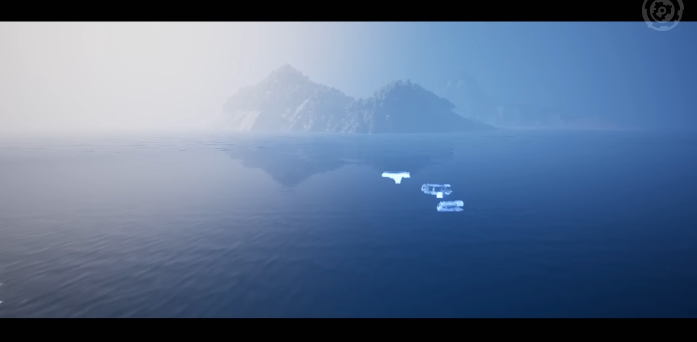
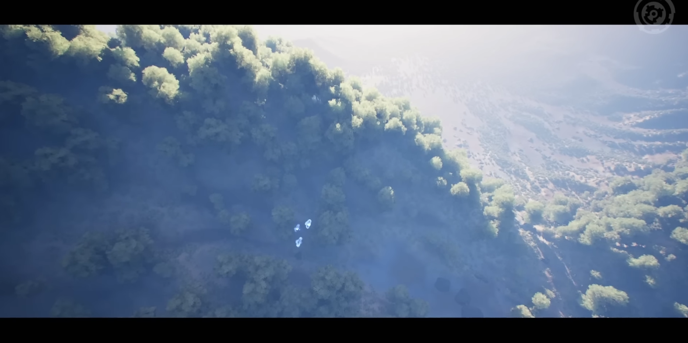
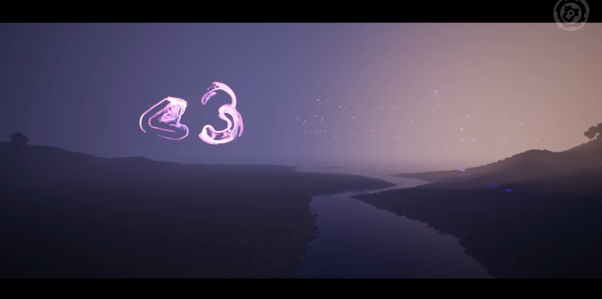
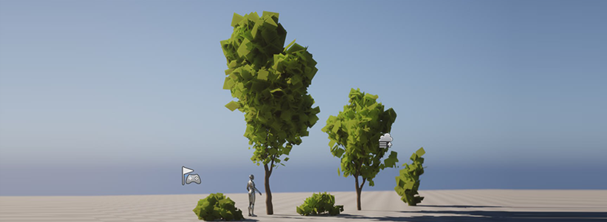
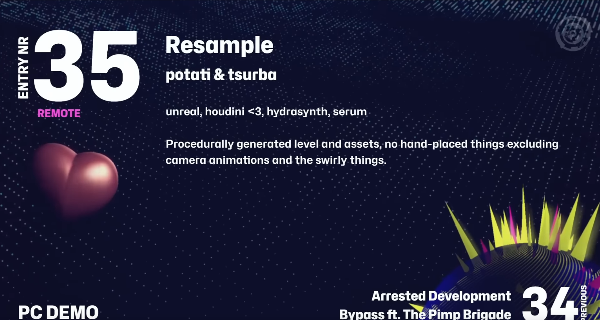

Pax Dei
Procedural world generation
The idea was to see how far I could get creating an environment that is completely procedural, including the environment assets themselves.
For tools, I used unreal 5.1 and Houdini. Techniques included a heightfield and scattering system, instancing the generated assets into unreal using houdini engine, generating the plants using L-systems, and simple rocks. The animations were done with unreal's cine/animation tools.
video from the revision stream
Procedural world generation
The idea was to see how far I could get creating an environment that is completely procedural, including the environment assets themselves.
For tools, I used unreal 5.1 and Houdini. Techniques included a heightfield and scattering system, instancing the generated assets into unreal using houdini engine, generating the plants using L-systems, and simple rocks. The animations were done with unreal's cine/animation tools.
video from the revision stream



